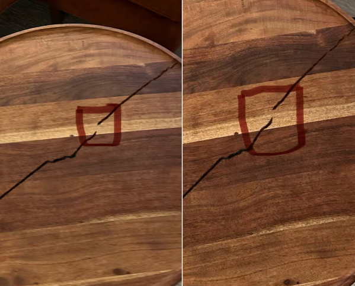

Airbnb’s AI “damage evidence” that couldn’t stay consistent.

An Airbnb “superhost” tried a modern classic: don’t bother with real property damage when you can just fake it. A London-based guest said a host hit her with a massive claim (over £12,000) and backed it up with images that looked… a little too creative—like someone asked an image model for “coffee table, but make it lawsuit-ready.” The accusations weren’t subtle either: cracked furniture, stained mattress, broken appliances, the full “this guest personally ended my dynasty” bundle.
The best part (worst part?) was the table: multiple photos of the “same” coffee table showed different damage patterns, like the furniture couldn’t decide which alternate timeline it belonged to. That inconsistency is the tell. Real objects are annoyingly consistent across photographs. If the crack moves, changes shape, or upgrades itself between angles, you’re not documenting a table—you’re documenting a workflow. And yet Airbnb initially went with the deeply scientific approach of “after careful review of the photos,” and tried to bill the guest anyway.
Once the guest pushed back pointing out the obvious discrepancies and The Guardian started asking questions, Airbnb suddenly
discovered the radical concept that evidence should resemble reality. The appeal was accepted, the guest got refunded, and Airbnb
admitted it couldn’t verify the images. Which is the lesson here: as AI makes it cheaper to fabricate “proof” platforms are going
to need something stronger than “squint at JPEGs and hope for the best.” Otherwise the future of customer support is just two AIs
arguing while a human gets invoiced for a coffee table that keeps re-rendering itself.
Source:
theguardian.com